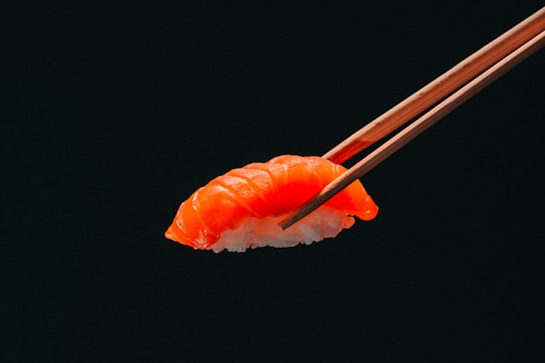
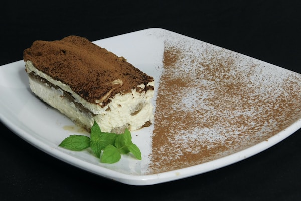

京都 ガーデン
KYOTO GARDEN
Tradição, frescor e a verdadeira essência da culinária japonesa servida em cada prato. Bem-vindo ao seu refúgio gastronômico do Japão.
Ver CardápioPor que Kyoto Garden?
特 別 な 経 験
Ingredientes Frescos
Peixes selecionados diariamente e vegetais orgânicos direto do produtor.

Chef Sushiman
Nosso chef tem mais de 20 anos de experiência em culinária tradicional japonesa.

Ambiente Autêntico
Decoração inspirada nos tradicionais jardins de Kyoto, com música e iluminação suaves.